무선설비기사 (2018-10-06 기출문제)
1과목: 디지털 전자회로
1. 다음 회로에서 안정계수(SV)값이 증가하기 위한 조건으로 옳은 것은?
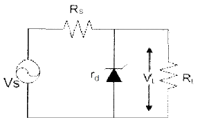
- VS를 증가시킨다.
- RS를 감소시킨다.
- 출력전압(△VL)을 감소시킨다.
- 출력전류(△IL)을 감소시킨다.
(정답률: 73%)

2. 다음 그림과 같이 2[㏀]의 저항과 실리콘(Si)다이오드의 직렬 회로에서 다이오드 양단의 전압 크기는 얼마인가?
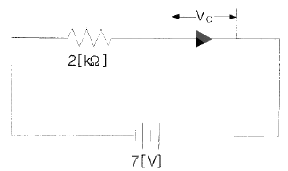
- 0[V]
- 1[V]
- 5[V]
- 7[V]
(정답률: 73%)
3. 다음 중 부궤환 증폭기의 특성이 아닌 것은?
- 잡음이 감소된다.
- 주파수 특성이 개선된다.
- 비직선 왜곡이 감소된다.
- 안정도가 다소 감소된다.
(정답률: 67%)
4. 다음 증폭기 회로에서 RE가 증가하면 어떤 현상이 일어나는가?
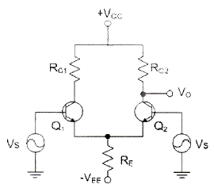
- 차동이득이 감소한다.
- 차동이득이 증가한다.
- 동상이득이 감소한다.
- 동상이득이 증가한다.
(정답률: 63%)
5. 다음 중 궤환회로에서 발진이 일어나는 조건인 바크하우젠 발진조건에 관한 설명으로 틀린 것은? (단, A는 증폭부의 증폭률이고 β는 궤환부의 궤환율이다.)
- 발진조건은 |Aβ |= 1 이다.
- Aβ＜1 이면 발진이 일어나지 않는다.
- Aβ＞1 이면 발진은 되나 이득이 계속 증가하여 클리핑이 일어나면서 불안정하다.
- Aβ=1 은 발진조건으로 일정한 진폭의 직류출력이 발생한다.
(정답률: 60%)
6. 전류 궤환 증폭기의 출력 임피던스는 궤환이 없을 경우에 비해 어떻게 변화하는가?
- 변화가 없다.
- 0이 된다.
- 감소한다.
- 증가한다.
(정답률: 64%)
7. 그림과 같은 발진회로에서 200[kHz]의 발진주파수를 얻고자 한다. C1과 C2의 값이 0.001[μF]이라면 L의 값은 약 얼마인가?
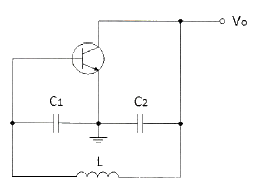
- 2.21[mH]
- 1.27[mH]
- 2.31[mH]
- 1.35[mH]
(정답률: 58%)
8. 발진회로의 궤환루프의 감쇠가 0.5인 경우 발진을 유지하기 위한 증폭 회로의 전압이득은?
- 전압이득은 2.0이어야 한다.
- 전압이득은 1.5이어야 한다.
- 전압이득은 1.0이어야 한다.
- 전압이득은 0.5보다 적어야 한다.
(정답률: 75%)
9. 다음 중 비동기 검파에 대한 설명으로 옳은 것은?
- 국부발진 신호와 입력신호를 곱하게 하는 곱셈 검파기이다.
- 송신측과 수신측이 동일한 반송파를 이용한다.
- 주로 ASK와 FSK에 이용된다.
- 동기검파보다 복조시스템이 복잡하다.
(정답률: 62%)
10. 주파수 변조에서 신호주파수가 4[kHz], 최대 주파수 편이가 20[kHz]이면, 변조지수는?
- 0.2
- 5
- 16
- 80
(정답률: 77%)
11. 간접 FM 변조방식(Armstrong 방식)에서의 필수 요소가 아닌 것은?
- 가산기(Adder)
- 평형 변조기(Balanced modulation)
- 위상천이기(90° phase shifter)
- 진폭제한기(Limiter)
(정답률: 63%)
12. AM변조에서 100[%] 변조인 경우 그 변조 출력 전력이 6[kW]일 때, 반송파 성분의 전력은 얼마인가?
- 1[kW]
- 1.5[kW]
- 2[kW]
- 4[kW]
(정답률: 63%)
13. 다음 그림과 같은 회로에 대한 설명 중 옳은 것은?
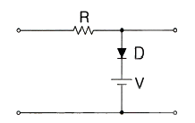
- 입력 파형의 아랫부분을 잘라내는 베이스 클리퍼 회로이다.
- 입력 파형의 윗부분을 잘라내는 피크 클리퍼 회로이다.
- 직렬형 베이스 클리퍼 회로이다.
- 입력 파형의 위, 아래 부분을 일정하게 잘라내는 클리퍼 회로이다.
(정답률: 79%)
14. RC 회로의 출력에서 최종치의 10[%]~90[%]까지 얻는데 소요되는 시간을 무엇이라 하는가?
- 지연 시간
- 하강 시간
- 상승 시간
- 전이 시간
(정답률: 84%)
15. 다음 중 Master-Slave 플립플롭은 어떠한 현상을 해결하기 위한 플립플롭인가?
- 지연 현상
- Race 현상
- Set 현상
- Toggle 현상
(정답률: 80%)
16. 마스터 슬레이브 JK-FF에서 클럭 펄스가 들어올 때마다 출력 상태가 반전되는 것은?
- J=0, K=0
- J=1, K=0
- J=0, K=1
- J=1, K=1
(정답률: 75%)
17. JK 플립플롭(Flip-Flop)을 다음 그림과 같이 연결했을 때, 결과치가 같은 플립플롭은?
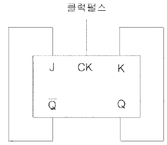
- D 플립플롭
- RS 플립플롭
- T 플립플롭
- MS 플립플롭
(정답률: 66%)
18. 다음 중 전감산기의 입력과 관계없는 것은?
- 감수
- 상위에서 자리 빌림
- 피감수
- 하위에서 자리 빌림
(정답률: 74%)
19. 다음은 어떤 논리 회로인가?
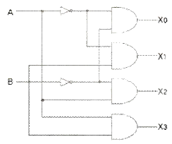
- 인코더
- 디코더
- RS 플립플롭
- JK 플립플롭
(정답률: 74%)
20. 25진 리플 카운터를 설계할 경우 최소한 몇 개의 플립플롭이 필요한가?
- 4개
- 5개
- 6개
- 7개
(정답률: 80%)
2과목: 무선통신 기기
21. 다음 중 디지털 신호에 따라 반송파의 진폭과 위상을 동시에 변화시키는 변조방식은?
- ASK(Amplitude Shift Keying)
- QPSK(Quadrature Phase Shift Keying)
- QAM(Quadrature Amplitude Modulation)
- OQPSK(Offset Quadrature Phase Shift Keying)
(정답률: 83%)
22. CDMA(Code Division Multiple Access)의 특징 으로 옳은 것은?
- 수신기의 하드웨어가 단순해진다.
- 고도의 전압제어 기술이 요구된다.
- 주파수 및 timing 계획이 필요하며 주파수 사용효율이 높다.
- 서로 직교관계에 있는 부호를 할당한다.
(정답률: 67%)
23. 다음 중 디지털송신설비를 아날로그송신설비에 비교한 설명으로 틀린 것은?
- 적은 전력으로 광범위한 서비스지역을 확보할 수 있다.
- 데이터를 이용한 다양한 서비스가 가능하다.
- 디지털 송신설비는 좁은 면적에 시설할 수 있다.
- 다지털 송신설비는 단순한 편이나 운용비용이 비싸다.
(정답률: 77%)
24. 100[kbps] 데이터율로 디지털 데이터를 전송할 경우 16-ary QAM의 심볼전송률[sps]은?
- 25[ksps]
- 50[ksps]
- 80[ksps]
- 160[ksps]
(정답률: 80%)
25. 위성 통신에 사용되는 주파수 대역 중 12.5~18[GHz] 대역을 무엇이라고 하는가?
- C 밴드
- Ku 밴드
- Ka 밴드
- X 밴드
(정답률: 84%)
26. 다음 그림은 어떤 변조 파형인가?(문제 오류로 그림파일을 복원하지 못하였습니다. 정답은 2번입니다.)
- 진폭 편이 변조
- 위상 편이 변조
- 주파수 편이 변조
- 진폭 변조
(정답률: 84%)
27. 100[MHz]의 반송파로 주파수가 50[KHz]인 정현파 신호를 주파수 변조할 때 주파수 감도계수 kf=100을 사용한다고 가정하자. 정현파 신호의 진폭을 10으로 하였을 때 FM 변조된 신호의 대역폭은?
- 102[KHz]
- 120[KHz]
- 240[KHz]
- 300[KHz]
(정답률: 55%)
28. 다음 중 선박의 안전운항을 위하여 필요한 관련 장비 및 도구에 적합하지 않은 것은?
- AIS
- LRIT
- SSAS
- GSNN
(정답률: 61%)
29. 슈퍼헤테로다인 수신기의 영상주파수 방해를 줄이기 위해 동조회로를 어느 단에 설치하는 것이 바람직한가?
- 혼합기 앞단
- 혼합기 뒷단
- 중간주파수증폭기 뒷단
- 저주파전력증폭기 앞단
(정답률: 70%)
30. 다중접속 기술 방식 중 OFDMA(Orthogonal Frequency Division Multiple Access) 방식의 단점으로 옳은 것은?
- 타임슬롯 동기화가 어렵다.
- 주파수 자원의 이용 효율이 낮다.
- 복잡한 전력제어 알고리즘이 필요하다.
- 시간동기와 주파수동기에서 오류가 발생하면 성능저하가 심각하다.
(정답률: 77%)
31. 전원장치에 사용되는 평활회로의 역할은 무엇인가?
- 저역여파기
- 고역여파기
- 대역여파기
- 대역소거여파기
(정답률: 71%)
32. 다음 중 축전지에 대한 설명으로 틀린 것은?
- 축전지는 한번 충전하여 영구적으로 사용하는 전지이다.
- 1차 전지는 한번 사용하면 다시 사용할 수 없는 전지이다.
- 2차 전지는 충전과 방전을 몇 번이고 반복하여 사용할 수 있는 전지이다.
- 축전지의 종류에는 납 축전지와 알칼리 축전지 등이 있다.
(정답률: 85%)
33. 제어부의 연결 형태에 따른 정전압 회로의 종류에 해당되지 않는 것은?
- 제너 다이오드형
- 가변용량 콘덴서형
- 병렬 제어형
- 직렬 제어형
(정답률: 70%)
34. 무정전 전원공급 장치 설비 중 무전압 상태의 열화진단방법으로 적합하지 않은 것은?
- 절연저항법
- 직류 성분법
- 부분방전 시험
- 직류 고전압 인가법
(정답률: 49%)
35. 측정물의 작용에 의하여 계측기의 지침이 변위를 일으켜, 이 변위를 눈금과 비교하여 측정치를 얻는 측정방식은 무엇인가?
- 편위법
- 영위법
- 보정법
- 치환법
(정답률: 75%)
36. 인버터의 스위칭 주파수가 2[kHz]가 되려면 주기는 몇 [ms]로 해야 하는가?
- 0.1[ms]
- 0.5[ms]
- 1[ms]
- 10[ms]
(정답률: 77%)
37. 기준 안테나로 무손실 반파장 다이폴 안테나와 등방성 안테나를 사용하여 피측정 안테나의 이득을 측정한 경우 각각의 이득을 무엇이라고 하는가?
- 상대이득, 절대이득
- 상대이득, 지상이득
- 절대이득, 지상이득
- 절대이득, 상대이득
(정답률: 77%)
38. 다음 중 FM수신기의 감도 측정 방법으로 적합한 것은?
- 잡음 증가감도에 의한 측정방법
- 이득 증가감도에 의한 측정방법
- 잡음 억압감도에 의한 측정방법
- 이득 억압감도에 의한 측정방법
(정답률: 75%)
39. 무부하시의 직류 출력전압을 220[V], 부하시의 직류 출력전압을 200[V]라 할 때, 전압 변동률은 몇 [%] 인가?
- 5[%]
- 10[%]
- 20[%]
- 40[%]
(정답률: 82%)
40. 고주파 전압계에 나타나는 정재파의 최대점 전압과 최소점 전압이 각각 12[V], 4[V]일 때, 정재파비는 얼마인가?
- 0.5
- √2
- 2
- 3
(정답률: 72%)
3과목: 안테나 공학
41. 다음 중 전파에 관한 설명으로 맞는 것은?
- 진행방향에는 전계와 자계가 없고 직각인 방향에만 전계와 자계 성분이 있는 경우를 구면파라고 한다.
- 매질의 종류에 관계없이 속도는 광속과 같다.
- 전파는 종파이다.
- 군속도×위상속도 = (광속도)2
(정답률: 79%)
42. 어떤 전자파의 전계의 세기는 E=10cos(109t+30z)와 같다. 이 전자파의 위상속도는 얼마인가?
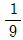
× 108 [m/sec]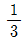
× 108 [m/sec]- 3 × 108 [m/sec]
- 9 × 108 [m/sec]
(정답률: 74%)
43. 안테나계에 대한 설명으로 틀린 것은?
- 안테나 전류의 파복에서 급전하는 것을 전류급전이라 한다.
- 같은 길이의 안테나에서도 전압급전인가, 전류급전인가에 따라 특성 임피던스가 달라진다.
- 동조 급전선인 때에만 전압급전과 전류급전의 구별이 있다.
- 안테나의 길이가 ℓ/2이더라도 중앙에서 급전하면 전류급전이고, 끝단에서 급전하면 전압급전이다.
(정답률: 68%)
44. 다음 중 도파관의 여진의 종류가 아닌 것은?
- 정전적 결합에 의한 여진
- 분기적 결합에 의한 여진
- 작은 루프 안테나에 의한 여진
- 전자적 결합에 의한 여진
(정답률: 64%)
45. 전송선로의 인덕턴스가 2[μH/m], 커패시턴스가 50[pF/m]일 때 이 선로에 대한 위상속도는?
- 0.1×108[m/sec]
- 1×108[m/sec]
- 10×108[m/sec]
- 100×108[m/sec]
(정답률: 69%)
46. 다음 중 정재파에 대한 설명으로 틀린 것은?
- 한 방향으로 진행하는 파이다.
- 정합이 되어있지 않았을 때 생긴다.
- 정재파가 크면 클수록 전송손실이 크다.
- 전류와 전압의 위상은 선로상 어느 점에서도 동일하다.
(정답률: 66%)
47. 부하의 정규화 임피던스가 Zn=1.5+j0인 무손실 급전선의 전압 정재파비는 얼마인가?
- 1.0
- 1.5
- 2.0
- 3.0
(정답률: 77%)
48. 급전선의 임피던스 Zo=Ro+jXo와 부하의 임피던스 ZL=RL+jXL에서 Ro, RL, Xo, XL이 어떤 관계에 있을 때 임피던스 정합이 됐다고 하는가?
- Ro = RL, Xo = XL
- Ro = RL, Xo = -XL
- Ro = -RL, Xo = XL
- Ro = -RL, Xo = -XL
(정답률: 72%)
49. 정전계와 복사전계의 크기가 같아지는 지점은? (단, λ는 파장이다.)
- λ
- 3.14λ
- λ/2
- 0.16λ
(정답률: 74%)
50. 근거리 Fading 방지용으로 적합한 안테나 높이는? (단, λ는 파장이다.)
- 0.84λ
- 0.73λ
- 0.53λ
- 0.64λ
(정답률: 50%)
51. 안테나의 접지방식 중 심굴 접지에 대한 그림으로 적합한 것은?
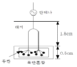
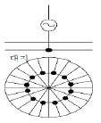
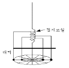
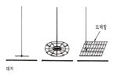
(정답률: 80%)
52. 안테나의 기저부에 콘덴서를 삽입하는 이유는?
- 고유 주파수 보다 높은 주파수에 공진시킨다.
- 고유 주파수 보다 낮은 주파수에 공진시킨다.
- 접지저항을 감소시키기 위하여 사용한다.
- 접지저항을 증가시키기 위하여 사용한다.
(정답률: 64%)
53. 다음 중 진행파 안테나이면서 장중파대 수신용인 안테나는?
- 루프 안테나
- 웨이브 안테나
- 역L형 안테나
- Bellini-Tosi 안테나
(정답률: 53%)
54. 안테나 손실저항 중 코로나손실에 대한 설명으로 옳은 것은?
- 코로나 방전 등에 의해 생기는 손실
- 안테나 지시물이나 안테나 주변의 유도체에 의한 고주파손실
- 대지와 안테나와의 접촉저항
- 안테나 주변의 도체 내에 유기되는 고주파와 전류에 의한 손실
(정답률: 81%)
55. 다음 중 전자파장해(EMI)에 대한 설명으로 틀린 것은?
- 전자파장해 또는 전자파간섭이라고 하며 전자기기로부터 부수적으로 발생되는 불필요한 전자파가 공간으로 방사된다.
- 전원선을 통해 전도되어 해당기기 자체나 통신망 및 다른 전기·전자기기에 전자기적 장해를 유발시킨다.
- 전자파를 발생시키는 기기가 다른 기기의 성능에 영향을 주지 않도록 전자파가 방사 또는 전도되는 것을 제한한다.
- 전자파보호, 전자파내성 또는 전자파 민감성이라 하며 전자파 방패가 존재하는 환경에서 기기, 장치 또는 시스템의 성능의 저하없이 동작할 수 있다.
(정답률: 64%)
56. 다음 중 전리층의 급격한 이동으로 반사파와 측파대가 받는 감쇠의 정도가 달라져서 생기는 페이딩에 대한 설명으로 틀린 것은?
- 선택성 페이딩이다.
- 주파수 다이버시티를 사용하여 방지할 수 있다.
- SSB(Single Side Band) 통신 방식을 사용하면 발생하지 않는다.
- AGC(Automatic Gain Control) 장치를 사용하여 방지할 수 있다.
(정답률: 67%)
57. 다음 중 대류권전파에서 라디오덕트가 생성되는 조건에 대한 표현으로 옳은 것은? (단, M : 수정굴절율, h : 송신안테나 높이)
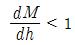
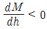
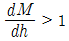
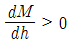
(정답률: 73%)
58. 다음 중 공전잡음에 대한 설명으로 틀린 것은?
- 장파보다 단파에서 영향이 더 심하다.
- 적도부근에서 많이 발생한다.
- 지향성 안테나를 사용하여 영향을 경감시킬 수 있다.
- 뇌방전에 의해 공전잡음이 발생한다.
(정답률: 61%)
59. 다음 중 지표파의 대지에 대한 영향으로 틀린 것은?
- 지표파의 전계강도 감쇠가 커지는 순서는 “해상→해안→평야→구릉→산악→시가지”이다.
- 주파수가 낮을수록 멀리 전파된다.
- 대지의 유전율이 클수록 멀리 전파된다.
- 수평편파보다 수직편파 쪽이 감쇠가 작다.
(정답률: 71%)
60. 지표면에서 전리층을 향해 수직으로 펄스파를 발사한 후, 2[ms] 후에 생기는 반사파는 어느 전리층에서 반사된 것인가?
- D층
- E층
- Es층
- F층
(정답률: 73%)
4과목: 무선통신 시스템
61. 다음 중 전리층 높이를 측정할 때 주로 사용되는 파형은?
- 정현파
- 삼각파
- 구형파
- 펄스파
(정답률: 69%)
62. 다음 중 PCM에서 발생되는 엘리어싱(Aliasing)에 대한 설명으로 옳은 것은?
- 시간영역에서 파형이 빠르게 변화하는 현상
- 주파수영역에서 스펙트럼의 위상반전이 반복되는 현상
- 시간영역에서 파형의 지연이 심해지는 현상
- 주파수영역에서 스펙트럼이 겹쳐서 나타나는 현상
(정답률: 73%)
63. 다음 무선통신 채널코딩 방식 중 일정한 정도까지의 Burst Error를 정정하는 능력이 있는 채널코딩 방식은?
- LDPC(Low Density Parity Check)
- Convolution Code
- Reed Solomon Code
- Turbo Code
(정답률: 63%)
64. 다음 중 PCM(Pulse Code Modulation) 다중통신의 특징이 아닌 것은?
- 전송로의 잡음이나 누화 등의 방해가 적다.
- 중계시마다 잡음이 누적되지 않는다.
- 경로(Route) 변경이나 회선 변환이 쉽다.
- 협대역 전송로가 필요하다.
(정답률: 75%)
65. 다음 중 브로드밴드(Broad Band) 전송 방식의 특징이 아닌 것은?
- 통신경로를 여러 개의 주파수 대역으로 나누어 이용한다.
- 디지털 신호로 변조하여 전송하는 방식이다.
- Audio/Video 등에 대한 전송도 가능하다.
- 주파수 분할 다중화 방식을 이용한다.
(정답률: 71%)
66. 우리나라에서 사용하고 있는 지상파 DMB 전송모드의 시스템 대역폭은 얼마인가?
- 1.25[MHz]
- 1.536[MHz]
- 3.84[MHz]
- 6[MHz]
(정답률: 62%)
67. 다음 중 이동통신 시스템에서 셀의 크기를 결정하는 요인으로 관련이 가장 적은 것은?
- 기지국 송신 전력
- 사용자 밀집도
- 주변 기지국으로부터의 전파 간섭
- 평균적인 통화시간
(정답률: 75%)
68. 다음 중 방향 탐지기(Direction Finder)에 대한 설명으로 틀린 것은?
- 항행 보조 장치로 사용한다.
- 야간방향 오차, 해안선 오차, 4분원 오차가 존재한다.
- 루프(Loop)안테나와 Goniometer의 특성을 이용한다.
- 마이크로파(극초단파) 정도의 전자기파를 물체에 발사시켜 그 물체에서 반사되는 전자기파를 수신하여 물체와의 거리, 방향, 고도 등을 알아내는데 사용한다.
(정답률: 61%)
69. DMB(Digital Multimedia Broadcast) 시스템에 대한 설명으로 틀린 것은?
- DMB는 전송수단에 따라 지상파 DMB와 위성 DMB로 구분한다.
- CD 수준의 음질과 데이터 또는 영상서비스가 가능하다.
- 다양한 디지털콘텐츠를 이동중인 휴대단말기 가입자에게만 서비스가 가능하다.
- 고정수신자 및 이동수신자에게 고품질로 제공되는 디지털 멀티미디어 방송서비스를 의미한다.
(정답률: 83%)
70. 다음 중 소비 전력이 가장 작은 무선통신 시스템은?
- Wi-Fi
- Wibro
- Bluetooth
- Wimax
(정답률: 82%)
71. 위성과 지구국의 위치를 이용해 궤도 역학으로부터 지연(Delay)을 계산하여 동기(Sync)를 맞추는 망동기 방식은?
- Local Loop Control 방식
- Remote Loop Control 방식
- Open Loop Control 방식
- Close Loop Control 방식
(정답률: 62%)
72. OSI 참조 모델의 계층과 이에 관련된 프로토콜이나 기술을 잘못 짝지은 것은?
- 데이터링크 계층 - LLC
- 전달 계층 - FTP
- 물리 계층 - IrDA
- 네트워크 계층 - OSPF
(정답률: 64%)
73. 다음의 ASCII 제어문자 중에서 수신기로부터 송신기로 긍정적인 응답을 보내기 위한 것은?
- NAK
- ENQ
- ACK
- EOT
(정답률: 80%)
74. 다음 중 무선 인터넷 기술의 하나로 무선 단말기 및 무선망에서 무선 응용서비스를 사용할 수 있도록 하는 프로토콜은 무엇인가?
- RADIUS
- HDLC
- WAP
- CHAP
(정답률: 77%)
75. 다음 중 BASIC 프로토콜의 특성이 아닌 것은?
- 루프 형태의 데이터링크에 사용할 수 있다.
- 사용 코드에 제한이 있다.
- 연속적 ARQ 방식은 사용할 수 없다.
- 전이중은 불가능하다.
(정답률: 41%)
76. 통신 프로토콜은 ISO/OSI 7 계층 중 전달 계층(Transport Layer)을 중심으로 상위계층과 하위계층 프로토콜로 구분한다. 다음 중 하위계층의 프로토콜이 아닌 것은?
- 부 순서 프로토콜
- 문자 방식 프로토콜
- 문자 계수식 프로토콜
- XNS (Xerox Network System) 프로토콜
(정답률: 73%)
77. 다음 중 무선통신 실시설계의 산출물로 적합하지 않은 것은?
- 공사비 산출서
- 설계 계획서
- 실시설계 도서
- 설계 계산서
(정답률: 69%)
78. 다음 표에서 정의하는 것은 무엇인가?
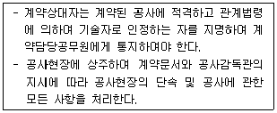
- 공사감독
- 공사안전관리자
- 공사현장소장
- 공사현장대리인
(정답률: 77%)
79. 다음 중 주파수대, 무선국 종류, 허용편차를 잘못 짝지은 것은?
- 4[MHz]초과 29.7[MHz]이하 - 지구국 - 백만분의 30
- 9[kHz]초과 535[kHz]이하 - 무선측위국 - 백만분의 100
- 29.7[MHz]초과 100[MHz]이하 - 육상국 - 백만분의 20
- 1606.5[kHz]초과 4.0[MHz]이하 – 아마추어국 - 백만분의 500
(정답률: 52%)
80. 휴대폰이나 MP3 Player와 같은 IT 기기들은 제조한 후 정전기방전에 대한 내성시험을 하게 되는데 다음 중 정전기방전을 나타내는 것은?
- ESD
- EFT/B
- Surge
- EMI
(정답률: 57%)
5과목: 전자계산기 일반 및 무선설비기준
81. 16비트 명령어 형식에서 연산코드 5비트, 오퍼랜드1은 3비트, 오퍼랜드2는 8비트일 경우, ⓐ 연산종류와 사용할 수 있는 ⓑ 레지스터의 수를 바르게 나열한 것은?
- ⓐ 32가지, ⓑ 512
- ⓐ 31가지, ⓑ 8
- ⓐ 32가지, ⓑ 8
- ⓐ 8가지, ⓑ 511
(정답률: 75%)
82. 전자계산기 소프트웨어는 시스템 소프트웨어와 응용 소프트웨어의 두 가지 종류로 구분될 수 있다. 다음 중 시스템 소프트웨어가 아닌 것은?
- 과학용 프로그램
- 운영 시스템
- 데이터 베이스 관리 시스템
- 통신 제어 프로그램
(정답률: 75%)
83. 10진수 (38)10을 2진수로 올바르게 변환한 것은?
- (100100)2
- (100101)2
- (100110)2
- (100111)2
(정답률: 78%)
84. 다음 중 자료의 병렬전송을 직렬전송으로 변경하는 레지스터는?
- 명령 레지스터(IR)
- 메모리 주소 레지스터(MAR)
- 메모리 버퍼 레지스터(MBR)
- 쉬프트 레지스터(Shift Register)
(정답률: 77%)
85. 접근시간(Access Time)과 사이클시간(Cycle Time)에 관한 설명으로 틀린 것은?
- 사이클시간이 접근시간보다 대개 시간이 더 걸린다.
- 접근시간은 메모리로부터 정보를 거쳐오는 데 걸리는 시간이다.
- 접근시간은 주기억장치에만 관계되며 보조기억장치와는 상관이 없다.
- 접근시간은 메모리로부터 정보를 가지고 나와서 다시 재 기억시키는데 걸리는 시간이다.
(정답률: 71%)
86. 다음 중 컴퓨터의 운영체제에서 로더(Loader)의 주요 기능이 아닌 것은?
- 프로그램과 프로그램 간의 연결(linking)을 수행한다.
- 출력 데이터에 대해 일시 저장(spooling) 기능을 수행한다.
- 프로그램이 실행될 수 있도록 번지수를 재배치(relocation)한다.
- 프로그램 또는 데이터가 저장될 번지수를 계산하고 할당(allocation)한다.
(정답률: 76%)
87. 파일 관리자는 파일 구조에 따라 각기 다른 접근 방법으로 관리한다. 다음 중 저장공간의 효율성이 가장 높은 파일 구조는 어느 것인가?
- 직접 파일(Direct File)
- 순차 파일(Sequential File)
- 색인 순차 파일(Indexed Sequential File)
- 분할 파일(Partitioned File)
(정답률: 61%)
88. 다음 중 운영체제가 제공하는 소프트웨어 프로그램이 아닌 것은?
- 스택(Stack)
- 컴파일러(Compiler)
- 로더(Loader)
- 응용 패키지(Application Package)
(정답률: 69%)
89. 디스크 오류가 발생하였을 때, 디스크를 재구성하지 않고 복사된 것을 대체함으로써 데이터를 복구할 수 있는 RAID 레벨(Level)은?
- RAID 0
- RAID 1
- RAID 3
- RAID 5
(정답률: 67%)
90. 몇 개의 관련 있는 데이터 파일을 조직적으로 작성하여 중복된 데이터 항목을 제거한 구조를 무엇이라 하는가?
- Data File
- Data Base
- Data Program
- Data Link
(정답률: 82%)
91. 다음 공사 중 감리대상에서 제외되는 공사의 범위가 아닌 것은?
- 6층 미만으로서 연면적 5천 제곱미터 미만의 건축물에 설치되는 정보통신설비의 설치공사
- 철도, 도시철도 설비의 정보제어 등 안전관리를 위한 공사로서 총 공사금액이 1억원 미만인 공사
- 방송, 항공 설비의 정보제어 등 안전관리를 위한 공사로서 총 공사금액이 1억원 이상인 공사
- 전기통신사업자가 전기통신역무를 제공하기 위한 공사로서 총 공사금액이 1억원 미만인 공사
(정답률: 81%)
92. 방송통신기술의 진흥을 통한 방송통신서비스 발전을 위한 시책을 수립·시행하여야 하는 자는?
- 산업통상자원부장관
- 한국정보통신진흥협회장
- 문화체육관광부장관
- 과학기술정보통신부장관
(정답률: 77%)
93. 다음 중 전파감시 업무를 수행하여야 하는 목적으로 틀린 것은?
- 혼신의 신속한 제거를 위하여
- 새로운 전파자원의 확보를 위하여
- 전파이용 질서의 유지 및 보호를 위하여
- 전파의 효율적 이용을 촉진하기 위하여
(정답률: 78%)
94. 다음 문장의 괄호 안에 들어갈 내용으로 가장 적합한 것은?
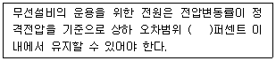
- 5
- 10
- 15
- 20
(정답률: 76%)
95. 다음 중 무선국에 대한 설명으로 틀린 것은?
- 실험국은 외국의 실험국과 통신을 하여서는 아니 된다.
- 아마추어국은 비상･재난구조를 위한 중계통신을 할 수 있다.
- 아마추어국은 제3자를 위한 통신을 하여서는 아니 된다.
- 실험국이 통신을 하는 때에는 암어를 사용하여야 한다.
(정답률: 80%)
96. 안테나계가 충족하여야 하는 조건이라고 할 수 없는 것은?
- 무선설비를 작동할 수 있는 최소 안테나 이득을 가질 것.
- 정합은 신호의 반사손실이 최소화되도록 할 것.
- 전압은 전압변동률이 정격전압을 기준으로 ±10[%] 이내에서 유지할 것.
- 지향성은 복사되는 전력이 목표하는 방향을 벗어나지 아니하도록 안정적일 것.
(정답률: 60%)
97. 거짓이나 그 밖의 부정한 방법으로 적합성평가를 받은 경우 어떠한 행정처분을 받는가?
- 시정명령
- 개선명령
- 적합성평가의 취소
- 판매중지
(정답률: 83%)
98. 무선통신업무에 종사하는 자는 원칙적으로 몇 년마다 통신보안교육을 받아야 하는가?
- 10년
- 5년
- 3년
- 2년
(정답률: 80%)
99. 다음 문장의 괄호에 들어갈 적합한 말은?
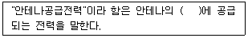
- 접지선
- 급전선
- 송신장치
- 단말기
(정답률: 84%)
100. 다음 중 고시대상 무선국을 허가한 경우 고시하여야 하는 사항이 아닌 것은?
- 허가연월일
- 허가번호
- 호출부호 또는 호출명칭
- 안테나형식과 명칭
(정답률: 59%)
회로를 살펴보면, RS가 증가하면 VS는 감소하게 됩니다. 이는 VS와 VREF의 차이가 작아지기 때문입니다. VS가 작아지면, 출력전압(△VL)도 작아지게 되므로, 안정계수(SV)가 증가하게 됩니다. 따라서 정답은 "RS를 감소시킨다." 입니다.